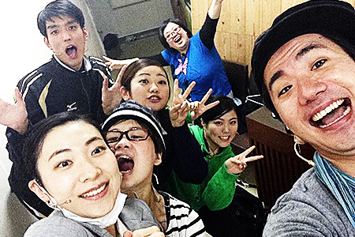
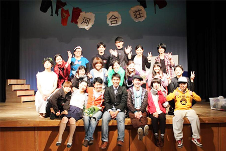

旗揚げ公演ミュージカル『リスタート！』 2014年3月
琉大ミュージカル出身、高安と愉快な仲間たちが劇団を結成！？
やりたいことをやりたいようにやってみる精神とは裏腹に、二幕構成、キャスト総勢14名の、意外と本格派オリジナルミュージカル。
芸能の国、沖縄に、新たな旋風を巻き起こします！
脚本/作詞作曲/演出：高安剛士
作曲/編曲：大城清貴、藤井千尋、山城一乃
振付：大見謝龍一
舞台監督：宮城知美
出演：手束康二、大見謝龍一、藤井千尋、山城一乃、上原真喜、金城愛未、石原昌拓、和泉いづみ、大城清貴、伊豆春香、高安剛士、﨑山さつき、知念遼、當間涼
【ミュージックナンバー】
M1End M2Looser M3かわいそう M4世の中ね、顔かお金かなのよ M5ため息 M6要らないもの M7歩こう M8バカばっか M9地図 M10かわいそうrep. M11Start M12プランB M13大切なもの M14自問自答、自問自逃、自問自闘 M15歩こうrep. M16為息rep. M17Re:Start


【あらすじ】
家賃２万円。風呂なし、キッチンなし、トイレは共同の「河合荘」は、社会の負け組が集まるボロアパート。
そこには26歳を過ぎたアイドル、面白くない漫才師、独り身のアラサーホステスに、公務員浪人5年生…etc
社会の底辺でもがきながら、夢を持ち続けている10人の若者が暮らしていた。
住人のひとりであるアユムは作家になりたかった。だが、普通に就職。「自分の人生に意味は無い」などと無気力な毎日を過ごしていた。
ところがある日突然、会社をクビになってしまう。
「これはチャンスだ」と幼馴染のジュンと恋人のシホから文学賞への応募を提案されるも、「才能が無い」と拒否するアユム。
一方、画家志望のジュンも実は、自分の才能に疑問を持ちながら絵を描き続けていた。
しかし、アパートの住人でクリスチャンでもあるサクラの考えに触れ、少しづつ人生の意味を考え始める。
そんな中、ある事件が河合荘に起きてしまい、住人はそれぞれ選択を迫られることに…。
果たして、河合荘の住人は困難を乗り越え、それぞれの夢を叶えることができるのか？
そしてアユムは人生の「正解」を見つけ、リスタートを切ることができるのか！？